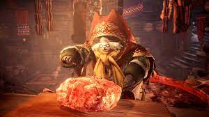

Grammeowster's Roast

Are you hungry, dear?
Come sit by Grammeowster's hearth and have some of her hearty roast. It'll cure what ails you!
Ingredients
- 10lb roast, best quality you can find
- Salt
- Blend of herbs and spices
- Love
Steps
- Let the roast come to room temperature.
- Season generously with salt, herbs, and spices.
- Roast on spit over open fire until cooked through.
- Let rest. Carve. Serve with as many sides as you want, don't be shy!
- Best enjoyed warm and with friends.